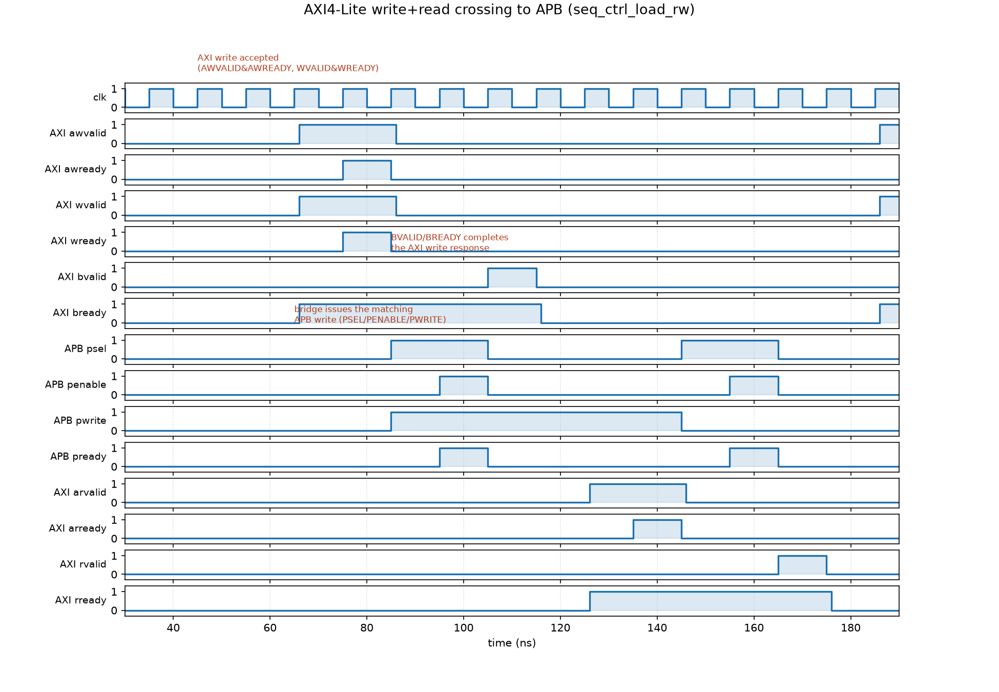

ProjectRTL Verification · AMBAPersonal project
AXI4-Lite to APB Bridge: a UVM-styled environment on open-source tools
A single-outstanding AXI4-Lite-to-APB bridge and an original APB timer peripheral, checked against an independent reference model — not data echo. Driver, monitor, scoreboard, and SVA, built without a licensed simulator, including two real bugs found and fixed along the way.
An AXI-to-APB bridge is a small, unglamorous piece of almost every ARM-based SoC: it drops a fast system bus down to the slow, simple peripheral bus that register-mapped blocks — timers, GPIO, UARTs — actually sit on. Small enough to finish properly, real enough to have genuine protocol corner cases. That combination is the point: a project sized to be completely verified rather than a large one left half-built.
The DUT: a bridge, and an original peripheral behind it
The bridge itself is a single-outstanding AXI4-Lite slave / APB3 master FSM, written from scratch: IDLE → APB_SETUP → APB_ACCESS → RESP, with the address decode done in the bridge, not the peripheral. An address outside the peripheral's mapped window never reaches APB at all — the bridge returns SLVERR directly, PSEL is never asserted.
Behind it sits an original peripheral, not vendor IP: a GPT (Generic Programmable Timer) with a five-register map deliberately chosen to exercise every kind of register behavior a real block has — plain read/write, read-only status, write-1-to-clear, and a write that's staged rather than immediate:
| Offset | Name | Access | Behavior |
|---|---|---|---|
| 0x00 | CTRL | RW | EN starts a count, MODE selects one-shot vs. periodic |
| 0x04 | STATUS | RO / W1C | BUSY is read-only; TO clears only on a write of 1, never 0 |
| 0x08 | LOAD | RW | a write while BUSY is staged, applied only at the next reload — and costs one APB wait state |
| 0x0C | COUNT | RO | live down-counter |
| 0x10 | ID | RO, constant | 0xC0FF_EE01 |
That LOAD-while-BUSY case is the one wait-state condition in the whole design, and it's there on purpose: a wait state with no functional reason behind it is just an arbitrary delay in a testbench. This one exists because writing a live reload value needs a real cycle to stage safely without corrupting an in-flight count — a genuine reason to make the bridge's wait-state handling actually work, not just compile.
flowchart LR
M["AXI4-Lite master\n(TB driver)"] -->|"AWADDR·WDATA"| B
B["axi4lite_apb_bridge\nsingle-outstanding FSM"] -->|"PSEL·PENABLE·PWRITE·PADDR·PWDATA"| T["gpt_timer\nAPB slave, original design"]
T -->|"PRDATA·PREADY·PSLVERR"| B
B -->|"BRESP·RDATA·RRESP"| M
B -.->|"out-of-range addr:\nSLVERR direct, APB never touched"| M
A scoreboard that checks against an independent model, not an echo
The easy version of this testbench just checks that whatever goes in on AXI comes back out on APB unchanged. That proves the wires are connected; it doesn't prove the timer's actual behavior is correct. The scoreboard here cross-checks three independent sources instead: what the AXI monitor observed, what the APB monitor observed, and what a small behavioral reference model — written from the register-map spec, not copied from the RTL — predicts the timer's state should be. The reference model watches the same live APB signals the DUT does and ticks forward every clock on its own, so it stays cycle-accurate without ever touching the RTL's internals.
Seven directed sequences (reset-value readback, the ID constant, CTRL/LOAD write-then-readback, one-shot count-to-zero, the W1C behavior including confirming a write of 0 does nothing, periodic reload, LOAD-while-BUSY) plus one constrained-random sequence all run through that same scoreboard. Six SystemVerilog assertions check APB protocol legality directly — PENABLE never without PSEL, address held through a wait state, PENABLE dropping the cycle after a completed transfer, no X on control signals mid-access.
Two real bugs, not zero
Both of these were found and fixed, not designed in as demo material:
- A blocking-vs-nonblocking assignment race. The first testbench pattern drove
AWVALIDand sampledAWREADYimmediately after the same@(posedge clk)— a classic race between the testbench's own update and the DUT's same-edge registered update, with no clocking block to arbitrate it. It reproduced as a full driver hang. The fix: sample readiness atnegedge(safely mid-cycle) and drive stimulus a small delta afterposedge, never exactly on it. - A genuine simulator bug. A class-based driver whose task takes a
virtual interfaceparameter and does any real procedural logic against its fields — even just reading several handshake signals with anif— corrupted the whole design's combinational convergence in Verilator, aborting withInput combinational region did not converge. It reproduced even when that task was never called, and was confirmed on two separate Verilator builds (the packaged 5.020 and a from-source 5.038) before ruling out a version fluke. The workaround:drive_write()/drive_read()/monitor_loop()live inside the interface files themselves, called only through the virtual handle, never taking one as a parameter.
No real uvm_pkg — said plainly, not hidden
The verification architecture is standard UVM shape — sequencer, driver, monitor, scoreboard, analysis ports, a +TEST= selector standing in for +UVM_TESTNAME — but it runs on hand-rolled base classes, not the real Accellera library. The actual uvm-core was cloned and tried first: it fails to compile on Verilator with a documented, longstanding gap in forward-referencing nested parameterized classes, not something fixable from this side. Rather than burn hours patching a simulator, the same methodology was implemented directly on Verilator's native SystemVerilog class support. Porting the environment onto a real uvm_pkg on a licensed simulator later is mostly a rename of the base classes — the driver/monitor/scoreboard logic above them barely changes.

Results
- 8 / 8 tests passing, 0 scoreboard errors, run from a clean rebuild via a single
make sim. - 94% functional coverage on the random test alone, 89% combined across all directed tests (hand-rolled coverage bins — Verilator doesn't implement
covergroup/coverpointat all, so this is tracked directly rather than with real SystemVerilog coverage constructs). - Entirely open-source toolchain — Verilator, Icarus Verilog, GTKWave — no EDA license needed to build, run, or demo it.
What's next
Two extensions are planned but not built yet, so they're named here rather than folded into the claims above: porting the bridge from APB to AHB-Lite (closer to AMBA's actual high-speed tier — APB is deliberately the low-speed side of the family), and an original register-mapped Ethernet-lite MAC peripheral alongside the timer, to exercise multi-slave decode on the same bus.